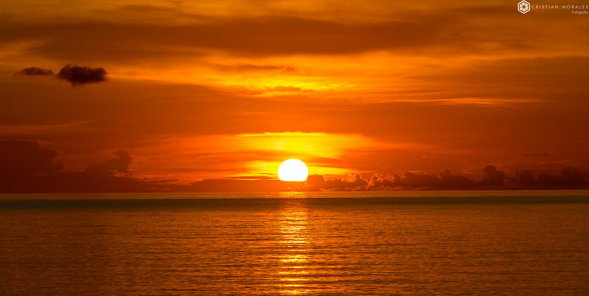

La Luz como Origen
+
Encuadre y Bienvenida: Establecemos el espacio seguro. Charla sobre qué es la luz desde la física y cómo el ojo (y la cámara) la reciben.
El "Pincel" de la Luz: Demostración técnica de cómo la luz dura y suave cambia un objeto. No solo miramos, tocamos la fuente de luz y su efecto.
Ejercicio de Percepción: El alumno debe encontrar 5 "contrastes" en el lugar. Es un ejercicio de atención focalizada para organizar el caos visual.
El Registro Inicial: Primeras fotos en modo automático para perder el miedo al equipo y capturar aquello que "le llamó la atención" (el objeto del deseo).
Cierre y Retroalimentación: Breve diálogo sobre qué sintió al mirar a través del visor.